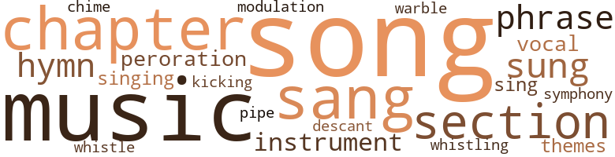
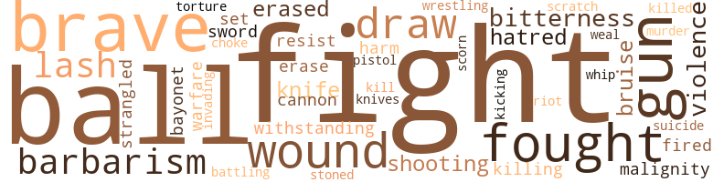
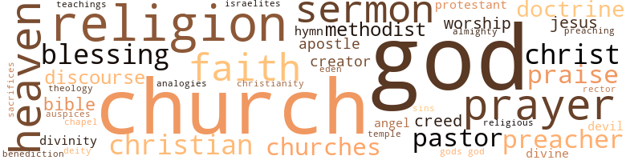

Poor Ben, a Story of Real Life, by Coleman, Lucretia H.N. (1890)
53 music-related terms matched in this text.
Most frequent terms in this topic: song (8); music (6); sang (5); chapter (3); section (3)
chapter.n.01
Definition: a subdivision of a written work; usually numbered and titled
| word | sentence |
|---|---|
| chapters | I have in previous chapters given the reader a brief sketch of the history of Poor Ben 's boyhood and early days of manhood . |
| chapter | In this chapter , the reader has been allowed the privilege of following the ministerial career of the subject , from his entrance into the pulpit , until he was honorably taken from it to serve his Master in another capacity , We should not say that " he is taken from the pulpit " for his love of the work , his aptness to preach , his popularity , taken together with his spirit of self-sacrifice , keep him preaching , teaching , and doing the work of an active pastor , throughout the entire year . |
| chapter | In 1883 , he finally went to work and threw the matter into shape and published a " Tawawa Journal , " therein stating the plan of organization , its aim , and departments , which are given in this chapter The following offucers were elected July 24th , 1883 : President , Bishop J. P. Campbell , D. D. LLD. , Philadelphia , Pa . |
| chapter | As a husband and father , Poor Ben claims a notice in this chapter . |
| chapters | We will swiftly and silently pass over a lapse of five years , leaving the record of their failures and successes to be mentioned in other chapters . |
chime.n.01
Definition: a percussion instrument consisting of a set of tuned bells that are struck with a hammer; used as an orchestral instrument
| word | sentence |
|---|---|
| chime | 'T is a joyful wedding peal ; and each chime caused the heart of Poor Ben and Mary Louise to thrill with a stronger emotion , a true love than they did twenty years ago ! |
descant.v.01
Definition: sing in descant
| word | sentence |
|---|---|
| descant | Those who so dearly love to descant on the " natural inferiority " of the Negro are either ignorant of the characteristics of our race , or else too base and ignoble to acknowledge that truth which has already been proven , and which is as inevitable as the grave . |
hymn.n.01
Definition: a song of praise (to God or to a saint or to a nation)
| word | sentence |
|---|---|
| hymn | He compiled a hymn book for the church , was President of the General Conventions and Conferences , and of Madison College . |
| hymn | Before the session dosed , the entire hotly visited the White House , and were received by Pres. Grant , and , before leaving the reception room , made its walls ring with that favorite hymn , " All Hail the Power of Jesus ' Name . " |
kick.v.04
Definition: kick a leg up
| word | sentence |
|---|---|
| kicking | " Good bye , Wash. " Good bye , old boy , " said Wash , kicking at Ben as he spoke . |
music.n.01
Definition: an artistic form of auditory communication incorporating instrumental or vocal tones in a structured and continuous manner
| word | sentence |
|---|---|
| music | The following ye extracts from some of the leading papers of his state : During the campaign of 1872 , August 24 , " Toledo Blade " says , " At the close of Governor Noyes ' address , the band struck up a national air , and notwithstanding the skill with which they discoursed the music , the audience shouted as with one voice for Poor Ben , who came forward and furnished a fitting sequel to the eloquent speech of the Governor . |
| music | After several soul stirring pieces of music by the Cadiz Cornet Rand , Mr. J. L. Rivers opened the meeting in a few well timed and appreciated remarks ; and then introduced Poor Ben of Urbana , as the orator of the day . |
| Music | Music . |
| music | The Fourteenth Regiment Band rendered fine music , and the Blaine and Logan Glee Club sang a number of its . |
| music | Good music was rendered at intervals during the speeches by the Cadet Band . |
| music | Then it was that the music of his sons and the songs of his daughters were only excelled by the orchestra of nature , and was the only true type of the harmony of earth and the symphony of heaven . |
| music | Between toasts splendid music was furnished by the Clipper Quartette , composed of Messrs. John Brown , Ben . |
| Music | Music was then rendered by the church choir ; after which prayer was offered by Rev. A. N. Spahr , followed by a quartette " Praise ye the Lord . " |
musical_instrument.n.01
Definition: any of various devices or contrivances that can be used to produce musical tones or sounds
| word | sentence |
|---|---|
| instrument | The act of incorporation of the African Company , was as follows : I. Know all men by these presents that Ludlow Apjones , W. B. Arnett , Solomon Blackburn , Andrew J. DeHart , A. A. Brasher , Lewis Schwab , Joseph S. , Gustar Stifer , Frank V. Cousins , J. B. Stansberry , and George Parker have associated themselves together , and , by this instrument , do hereby become incorporated in accordance with the laws of the state of Kentucky and the constition and laws of the United States , as the African Company . |
peroration.n.02
Definition: (rhetoric) the concluding section of an oration
| word | sentence |
|---|---|
| peroration | He closed with a fine peroration , and was greated with great applause . |
phrase.n.02
Definition: a short musical passage
| word | sentence |
|---|---|
| phrases | His many eloquent phrases , and happy hits brought down the house . |
| phrase | This riverman 's phrase meant that he would be expected to clean knives , and tins , or attend to any odd jobs the pantryman or steward might find for him to do . |
pipe.n.04
Definition: a tubular wind instrument
| word | sentence |
|---|---|
| pipe | As a coal cart passed him , he would at a glance pict ure of the canvas of memory the old horse , the cart , the driver , his bent back , his whip , tattered clothes and strong clay pipe , and long after the wagon had gone around the turn of the road , he would talk aloud to himself : " Well , - . |
section.n.01
Definition: a self-contained part of a larger composition (written or musical)
| word | sentence |
|---|---|
| Section | The Scientific Educational Bill was as follows : Section 1 . |
| section | That it shall be the duty of the proper officers in control of any school described in the foregoing section , to enforce the provisions of this act ; and to any such officer , school director , committee , superintendent or teacher , who shall refuse or neglect to comply with the requirements of this , or shall neglect or fail to make proper , provisions for the instruction required , and in the manner specified by the first section of this act ; for all pupils in each and every , school under his jurisdiction , shall be removed from ' office , and the vacancy filled as in other ' cases ' . |
| section | That it shall be the duty of the proper officers in control of any school described in the foregoing section , to enforce the provisions of this act ; and to any such officer , school director , committee , superintendent or teacher , who shall refuse or neglect to comply with the requirements of this , or shall neglect or fail to make proper , provisions for the instruction required , and in the manner specified by the first section of this act ; for all pupils in each and every , school under his jurisdiction , shall be removed from ' office , and the vacancy filled as in other ' cases ' . |
| section | Uncle Nicholas was a brother of Bennie 's mother , and a steamboat man ; working all the week , and laying over at Brownsville on Sundays , as was the custom of all the river-men in that section . |
sing.v.02
Definition: produce tones with the voice
| word | sentence |
|---|---|
| sang | The Fourteenth Regiment Band rendered fine music , and the Blaine and Logan Glee Club sang a number of its . |
| sung | I remember , in the years of my childhood , there was a song then , sung in Pennsylvania , ' Roll on , Liberty 's Ball . ' |
| sang | In 1848 , when Fremont 's party was born , 246,000 sang the same song . |
| sang | Then my poor mother , lifted up her voice and sang ' Roll on , Liberty 's Ball ! ' |
| sing | Said he : " We sing of our silent soldiers , Dead , but their souls go marching on . ' |
| sang | He early learned , to put into practice , the sentiment of the song he daily sang , and which is familiar to every ear : " Over and over again , The brook through the meadow flows , And over and over and over again , The tireless mill-wheel goes . |
| sang | Mr. Dan F. Smith , of the Exchange Hotel clerical force , sang the bass solo . |
| sung | A Duet - " No hope beyond " was then sung , and ex-Mayor Brand being present , was called upon , and responded in a neat little speech , going back to the time of slavery , the struggle through the war , their enfranchisement , on up to the , present time . |
singing.n.01
Definition: the act of singing vocal music
| word | sentence |
|---|---|
| singing | Samuel Robin-son lead the singing , and Poor Ben did the preaching , so it was known as , and called " Ben 's and Sam 's Revival . " |
song.n.01
Definition: a short musical composition with words
| word | sentence |
|---|---|
| songs | patriotic songs in that perfect manner for which it has won great fame . |
| song | I remember , in the years of my childhood , there was a song then , sung in Pennsylvania , ' Roll on , Liberty 's Ball . ' |
| song | In 1848 , when Fremont 's party was born , 246,000 sang the same song . |
| songs | Then it was that the music of his sons and the songs of his daughters were only excelled by the orchestra of nature , and was the only true type of the harmony of earth and the symphony of heaven . |
| song | He early learned , to put into practice , the sentiment of the song he daily sang , and which is familiar to every ear : " Over and over again , The brook through the meadow flows , And over and over and over again , The tireless mill-wheel goes . |
| song | I mean the gallant soldiers of the Union , the colored men , who were told that it was a white man 's war when the first gun fired ; but when the war cloud hung low , and the nation was trembling from center to circumference , when the minnie ball was whistling its song of death , then the colored men , who had been denied a place in the ranks of the Nation 's defenders , forgetting the insults and wrongs of the past , said " Give us a flag so free , without a slave , and we will fight to defend it as our fathers did so brave . " |
| song | After their first song they were encored three times , on one occasion giving a song in which Mr. Redd was given a chance to show his qualities as a warbler . |
| song | After their first song they were encored three times , on one occasion giving a song in which Mr. Redd was given a chance to show his qualities as a warbler . |
| song | This great , dark , rapid river , that in its lower latitudes flowed , moaned and groaned like an unending sorrow , now seemed to warble a more cheerful song ; its color was less dismal , and the sky it reflected was a clearer blue ; the clouds moved with a more perfect freedom : and the leaves , the birds , the laborers at work in the fields - all seemed to move to and fro with that air of physical liberty which did not exist below . |
| song | When Lincoln refused to allow Grant " conference with Lee unless for the capitulation of his army or for some purely , military matter , " and when the day following this , Lee surrendered to Grant , Poor Ben , his fellow teachers and students , all threw books and rules to the winds , and made the school-room walls of old Bethel Hall ring with that grand old song , " John Brown 's Body Lies Mouldering in the Grave . " |
symphony.n.01
Definition: a long and complex sonata for symphony orchestra
| word | sentence |
|---|---|
| symphony | Then it was that the music of his sons and the songs of his daughters were only excelled by the orchestra of nature , and was the only true type of the harmony of earth and the symphony of heaven . |
theme.n.03
Definition: (music) melodic subject of a musical composition
| word | sentence |
|---|---|
| themes | The habits of thinking steadily upon worthy themes during one 's secular toil will lighten labor , brighten life and develop power . |
transition.n.04
Definition: a musical passage moving from one key to another
| word | sentence |
|---|---|
| modulation | Thus , he encouraged a practice of impromptu speaking , and by attention to , and association with men of fine oratorical powers , he learned the qualities of voice , rate , delivery , gesture , style , force , modulation , key , variations , articulation and passions ; and soon , by constant practice , became & a public speaker of no mean degree . |
vocal_music.n.01
Definition: music intended to be performed by one or more singers, usually with instrumental accompaniment
| word | sentence |
|---|---|
| vocal | His public life in the school-room , Sunday-school , before societies and leagues all had a tendency to develop that which was within ; and to prepare his vocal and oratorical powers for their future task . |
whistle.v.01
Definition: make whistling sounds
| word | sentence |
|---|---|
| whistling | I mean the gallant soldiers of the Union , the colored men , who were told that it was a white man 's war when the first gun fired ; but when the war cloud hung low , and the nation was trembling from center to circumference , when the minnie ball was whistling its song of death , then the colored men , who had been denied a place in the ranks of the Nation 's defenders , forgetting the insults and wrongs of the past , said " Give us a flag so free , without a slave , and we will fight to defend it as our fathers did so brave . " |
| whistle | with thumbs burried in the arm-pits , his right foot firmly supporting him , his left toes rooting in the mud and his heel describing a quadrant in space , and his mouth puckered up into a whistle , but only emitting an asperate , sound . |
yodel.v.01
Definition: sing by changing register; sing by yodeling
| word | sentence |
|---|---|
| warble | This great , dark , rapid river , that in its lower latitudes flowed , moaned and groaned like an unending sorrow , now seemed to warble a more cheerful song ; its color was less dismal , and the sky it reflected was a clearer blue ; the clouds moved with a more perfect freedom : and the leaves , the birds , the laborers at work in the fields - all seemed to move to and fro with that air of physical liberty which did not exist below . |
85 violence-related terms matched in this text.
Most frequent terms in this topic: fight (8); brave (5); wound (4); ball (4); fought (4)
abrasion.n.01
Definition: an abraded area where the skin is torn or worn off
| word | sentence |
|---|---|
| scratch | The thought of giving up his position as storekeeper for what he termed a mere scratch never entered his mind , and he returned with the boat to St. Louis . |
battle.v.01
Definition: battle or contend against in or as if in a battle
| word | sentence |
|---|---|
| battling | Though the streams might wash him down , yet it was equally as probable he might some day land on happy isles , and there in bis wanderings he might share the fortunes of the good and great , and experience the comfort of peace and quiet after battling with the waves . |
bayonet.n.01
Definition: a knife that can be fixed to the end of a rifle and used as a weapon
| word | sentence |
|---|---|
| bayonet | Lieutenant Rudd , the gallant young soldier , has just recounted to you the deeds of valor performed by colored men - deeds written on the page of history with the sword and bayonet . |
bruise.n.01
Definition: an injury that doesn't break the skin but results in some discoloration
| word | sentence |
|---|---|
| bruises | When his bruises were healed , his clothes mended and shocked , nerves restored , he gave up cart driving and sought other employment . |
| bruise | The bruise was a very slight one , and so he continued his work , only applying simple remedies in the hope that it would soon heal . |
brutality.n.02
Definition: a brutal barbarous savage act
| word | sentence |
|---|---|
| barbarism | Born in an age of slavery , and barbarism , living in a time when the cries for liberty and justice wore continuous and heart-rending ; when heroic endurance , high examples of noble daring and deeds of valor , were enacted , such as were never exhibited before in the history of the world , Poor Ben could not be otherwise than patriotic . |
| barbarism | The Negro , like all other races , has risen from barbarism . |
cannon.n.04
Definition: heavy automatic gun fired from an airplane
| word | sentence |
|---|---|
| cannon | girls and boys , Bennie would have them build , under his supervision , a snow fort , and after it was completed and a good supply of compact , crystal cannon balls were made , he would divide his force into two armies , offensive and defensive . |
contemn.v.01
Definition: look down on with disdain
| word | sentence |
|---|---|
| scorn | Turning his back on the Democratic party he ran hastily back to his wagon , and up to this time he has given the Democrats his back , his scorn and his opposition . |
defy.v.01
Definition: resist or confront with resistance
| word | sentence |
|---|---|
| withstanding | Benjamin felt that he was rising , not withstanding there was Aunt Margaret 's every whim to gratify , and the numerous calls to run and answer , of that dignitary , Rector Cowan . |
draw.v.23
Definition: pull (a person) apart with four horses tied to his extremities, so as to execute him
| word | sentence |
|---|---|
| draw | One moment by his witicism and close , hits , the speaker had his audience aroused to a high pitch of enthusiasm , and throwing their hats to the ceiling , and at another , when describing the condition of the slave , or the patriotic service of the colored people in the rebellion , his words took on such pathos and deep feeling as to draw tears . |
| draw | Action and hope carry him from a plane of noble existences to a higher , while humanity and charity persuade him to reach down a helping hand and draw up the struggling ones from the lower world . |
| draw | At that date good and rapid penmen of color were rare , and great were the demands made upon the few to transact business , draw up notes , bills and other documents , in correct legal form . |
erase.v.01
Definition: remove from memory or existence
| word | sentence |
|---|---|
| erased | Springfield , could feel otherwise than thankful that Ohio 's statutes had the Black Laws erased forever from them . |
| erased | The Black Laws have been erased , and that principle is established . |
| erase | 1877 - Frederick Douglass , first colored U. S. Marshal ; John F. Quarles , first colored Consul to Spain , Oscar J. Dunn , of Louisiana , first colored Lieutenant Governor in the United States ; J. B. Smith a colored member of the Massachusett Legislature , introduced and secured the passage of the resolution to erase from the records the resolution of censures against Charles Sumner ; Hon. John R. Lynch , temporary chairman of the National Republican Convention , at Chicago , Ill. , June , 1884 ; Rev. Jno . |
fight.n.05
Definition: a boxing or wrestling match
| word | sentence |
|---|---|
| fight | The Torchlight will not oppose , or fight against him , because he is a colored man , or indirectly foster or excite prejudice against him by reason of that fact ; or the legislation of which he is the reputed father , This statement we consider is just to - - - - , and , at the same time , an honorable position for us to occupy . " |
| fight | He , not differing from the other boys , did not always play fight , but some times would find cause to go at it in real earnest , and when a falling out would occur , a round of boxing , or tug at wrestling would ensue . |
| fights | Ben gave but little thought to the scattered articles ; self-preservation was the thought uppermost in his mind , so he picked himself up and away-he flew towards home , verifying the old adage , " he that fights and runs away , lives to fight another day . " |
| fights | The noblest ambition is that which lights against sin and ignorance , poverty , and shame , fights in darkness ; for light ; lights when down , to rise . |
fight.v.02
Definition: fight against or resist strongly
| word | sentence |
|---|---|
| fought | Every day this little soldier of the chore boy regiment , answered Aunt Margaret 's roll call , ate his rations , fought his battles , though they may have been only imaginary ones , with the cemetery hob-gobblins , or cobble stone throws with which he put the geese to rout , and he made many such conquests , that perhaps are unworthy of laurels in the reader 's estimation ; yet they were nevertheless , battles and victories , or defeats comparatively equal to many which grown-up boys daily fight , win or lose . |
| fight | Every day this little soldier of the chore boy regiment , answered Aunt Margaret 's roll call , ate his rations , fought his battles , though they may have been only imaginary ones , with the cemetery hob-gobblins , or cobble stone throws with which he put the geese to rout , and he made many such conquests , that perhaps are unworthy of laurels in the reader 's estimation ; yet they were nevertheless , battles and victories , or defeats comparatively equal to many which grown-up boys daily fight , win or lose . |
| fought | They fought and voted , then said , ' Come and help us boys . ' |
| fought | The boys in the blue fought the battles and gained the victory ; though it was a country in ruins . |
| fight | I mean the gallant soldiers of the Union , the colored men , who were told that it was a white man 's war when the first gun fired ; but when the war cloud hung low , and the nation was trembling from center to circumference , when the minnie ball was whistling its song of death , then the colored men , who had been denied a place in the ranks of the Nation 's defenders , forgetting the insults and wrongs of the past , said " Give us a flag so free , without a slave , and we will fight to defend it as our fathers did so brave . " |
| fought | Let Ohio lead the train of free-will offering and every man , woman , and child send their mite , and raise a shaft of beauty and glory to the gallant soldiers of the race , and send the word from generation to generation that the ' black troops fought nobly . ' |
| fight | But Ben thumped away until he was not only sure of victory , but ; was quite out of breath , and could fight no longer . |
| fight | She listened , quietly , then when he had finished , she tried to show him how wrong it was to quarrel and fight , though inwardly thinking that he 'd do it again if he had to , he promised to keep away from bad boys and not fight any more . |
| fight | She listened , quietly , then when he had finished , she tried to show him how wrong it was to quarrel and fight , though inwardly thinking that he 'd do it again if he had to , he promised to keep away from bad boys and not fight any more . |
| fight | Ben gave but little thought to the scattered articles ; self-preservation was the thought uppermost in his mind , so he picked himself up and away-he flew towards home , verifying the old adage , " he that fights and runs away , lives to fight another day . " |
gag.v.06
Definition: cause to retch or choke
| word | sentence |
|---|---|
| choke | Unto the husband and the son belong The harvest of her works ; she maketh straight Each crooked path , and arms him for the strife ; And with the sickle of religion true , Cuts down the tares that choke the better life , Without her , who , unscathed can struggle through , Toil-soiling labors ? |
gun.n.01
Definition: a weapon that discharges a missile at high velocity (especially from a metal tube or barrel)
| word | sentence |
|---|---|
| gun | In , other words , that every gun in the army , every plank in the ships of the navy , was dedicated to the propagation of slavery : [ A voice . ] |
| guns | It was rebel : brains behind guns that created such havoc on many a bloody battle field . |
| gun | I mean the gallant soldiers of the Union , the colored men , who were told that it was a white man 's war when the first gun fired ; but when the war cloud hung low , and the nation was trembling from center to circumference , when the minnie ball was whistling its song of death , then the colored men , who had been denied a place in the ranks of the Nation 's defenders , forgetting the insults and wrongs of the past , said " Give us a flag so free , without a slave , and we will fight to defend it as our fathers did so brave . " |
| gun | While a comrade stood at the mouth of the den , with a loaded gun to attend to the old wolf if she came , George Brown went down into the dark cavern , feet fore-most , to a good distance , and brought out the young wolves , one or two at a time , until he had taken them all . |
harm.v.01
Definition: cause or do harm to
| word | sentence |
|---|---|
| harm | On the contrary , he was really a brave boy ; but then an unseen something , on a dark night , often causes much older persons to quake , and older heads to wonder , though their minds be concious that no danger is near , and there is nothing that can harm . |
hate.n.01
Definition: the emotion of intense dislike; a feeling of dislike so strong that it demands action
| word | sentence |
|---|---|
| hatred | Such hatred existed that they could not worship in peace . |
| hatred | The river banks were lighted up with a new brightness ; no feeling of imprisonment prevented deep inhalations of the wild-wood fragrance ; no cotton-picking slaves brought tears of pity from the heart to the eyes ; no inhuman faces of the overseers were seen to arouse the accursed passion of hatred . |
invade.v.01
Definition: march aggressively into another's territory by military force for the purposes of conquest and occupation
| word | sentence |
|---|---|
| invading | Here he intends to prevent all dissensions , keep back invading enemies , and preserve them in their marriage state , in a healthful , invigorating condition , so that with prudence , foresight and intuition he may still be their ruler for a longer term of years A soul union produces a marriage like that of Poor Ben 's , and insures both happiness and prosperity . |
kick.v.04
Definition: kick a leg up
| word | sentence |
|---|---|
| kicking | " Good bye , Wash. " Good bye , old boy , " said Wash , kicking at Ben as he spoke . |
kill.v.10
Definition: cause the death of, without intention
| word | sentence |
|---|---|
| kill | Then it is that luck meets him on the road , pauses in his vaunting pride to fawn upon the " lucky dog , " to extol him on the success and power so rapidly acquired , to shower him with the choice bits from the best game , to give him orders for quarters in the most prominent oxtalls of political preferment , to introduce him favorably to the " bulls and bears ; " finally to kill the fatted calf and make the " lucky dog " a permanent guest at luck 's mansion . |
| killed | Tate reached the years of manhood , joined the armyand was killed in battle . |
killing.n.02
Definition: the act of terminating a life
| word | sentence |
|---|---|
| killing | Before the war the northern Democrats did the shooting of them ; while now the southern Democrats do the shooting and killing , and their northern allies try to do the buying and selling . |
knife.n.02
Definition: a weapon with a handle and blade with a sharp point
| word | sentence |
|---|---|
| knife | We can not help noticing : though we secretly and silently leave out all comment , the numerous jack knife hieroglyphics , which may be seen on every object within . |
| knife | On this boat Ben set out in the position of " knife shiner . " |
| knives | This riverman 's phrase meant that he would be expected to clean knives , and tins , or attend to any odd jobs the pantryman or steward might find for him to do . |
malevolence.n.01
Definition: wishing evil to others
| word | sentence |
|---|---|
| malignity | When he saw and heard such noble veterans as Gov. Noyes , and general Swayne , both crippled in battle for the right , when he stood on the same platform with these men who knew what the Union cost , who forever bear with them the marks of rebel malignity , and the memory of brave blood that purchased the nation 's existence , he needed no other incentive to duty . |
murder.n.01
Definition: unlawful premeditated killing of a human being by a human being
| word | sentence |
|---|---|
| murder | The ladder to destruction : Disobedience to parents , breaking the Sabbath , lying , stealing , murder . |
musket_ball.n.01
Definition: a solid projectile that is shot by a musket
| word | sentence |
|---|---|
| ball | In 1840 , when John G. Burney started this ball to rolling in the United States , there were only 7,150 who dared to say ' Roll on , Liberty 's Ball ! ' |
| ball | This ball was growing larger , and the South knew that it was coming . |
| ball | The Southerners framed constitutions to keep the ball from rolling ; but prayer is a mighty thing , for over 2,000,000 , in 1860 , shouted , ' Roll on , Liberty 's Ball ! ' |
| ball | I mean the gallant soldiers of the Union , the colored men , who were told that it was a white man 's war when the first gun fired ; but when the war cloud hung low , and the nation was trembling from center to circumference , when the minnie ball was whistling its song of death , then the colored men , who had been denied a place in the ranks of the Nation 's defenders , forgetting the insults and wrongs of the past , said " Give us a flag so free , without a slave , and we will fight to defend it as our fathers did so brave . " |
| balls | girls and boys , Bennie would have them build , under his supervision , a snow fort , and after it was completed and a good supply of compact , crystal cannon balls were made , he would divide his force into two armies , offensive and defensive . |
| balls | The whiz of the swiftly sent balls , the stolen advances made on the rear of the fort , the shouts of the victorious boys or girls , who with , long poles , succeeded in bringing down a portion of the fort ; and finally the headlong rush of the ones who laid for so many minutes , held their , ill-gotten arsenal , chased by . |
open_fire.v.01
Definition: start firing a weapon
| word | sentence |
|---|---|
| fired | I mean the gallant soldiers of the Union , the colored men , who were told that it was a white man 's war when the first gun fired ; but when the war cloud hung low , and the nation was trembling from center to circumference , when the minnie ball was whistling its song of death , then the colored men , who had been denied a place in the ranks of the Nation 's defenders , forgetting the insults and wrongs of the past , said " Give us a flag so free , without a slave , and we will fight to defend it as our fathers did so brave . " |
pistol.n.01
Definition: a firearm that is held and fired with one hand
| word | sentence |
|---|---|
| pistol | Six days after the general rejoicing , came the report of the assassin 's pistol , and the nation was draped in mourning , for its liberator . |
resentment.n.01
Definition: a feeling of deep and bitter anger and ill-will
| word | sentence |
|---|---|
| bitterness | The speech of the former was free from the bitterness of spirit , violence of language , and recklessness of statement , which marked the harangue of the latter . |
| bitterness | exchange of products between nations is one of earth 's greatest benefits , inasmuch as it banishes national feeling of bitterness , does away with local prejudices , makes each branch of the human family feel its dependency upon the other branches , and creates tics of interest and good will . |
resist.v.04
Definition: withstand the force of something
| word | sentence |
|---|---|
| resist | Though we have made it an inflexible rule never to mix politics with religion , it is very hard to resist the impulse now , to say a few plain worth against that slaveholding spirit of Democracy , which has not moved quite as fast as the world has in the last twenty-years , and which , if it had its way today , would make things lively for any conference of the A. M. E. Church that might come across . |
riot.n.01
Definition: a public act of violence by an unruly mob
| word | sentence |
|---|---|
| riot | Thus ended this little careless , but riot thoughtless little workman 's second day dream , and he began hurrying along to regain lost time , chattering merrily , staring , first up into the dense foliage of the trees , then watching his shadow in the clear road ditch . |
shooting.n.02
Definition: killing someone by gunfire
| word | sentence |
|---|---|
| shooting | Before the war the northern Democrats did the shooting of them ; while now the southern Democrats do the shooting and killing , and their northern allies try to do the buying and selling . |
| shooting | Before the war the northern Democrats did the shooting of them ; while now the southern Democrats do the shooting and killing , and their northern allies try to do the buying and selling . |
sic.v.01
Definition: urge to attack someone
| word | sentence |
|---|---|
| set | By giving a description of Rev. Cowan 's parsonage , you will readily see another incentive to industry that - Bennie might have had , besides his love of employment and it may explain the reason why he seldom allowed the sun to set on unfinished work . |
stone.v.01
Definition: kill by throwing stones at
| word | sentence |
|---|---|
| stoned | " Those old boys chased me , and stoned me all the way home ; " gasped the poor boy , who now saw that he had lost the supposed victory he had made during the day by the inglorious defeat retreat at night . |
strangle.v.01
Definition: kill by squeezing the throat of so as to cut off the air
| word | sentence |
|---|---|
| strangled | Nevertheless little Bennie was here ; he came to be the household pet ; came to suffer the pangs of colic , and to be strangled with paregoric ; came to be tossed , trotted , starved , gorged , carefully tended , or left to cry himself to sleep . |
suicide.n.01
Definition: the act of killing yourself
| word | sentence |
|---|---|
| suicide | To know the real value of life , or have a perfect idea of self , one must have stood at least once at the gate of death , been forced to the door-sill of suicide , or driven to the brink of insanity . |
sword.n.01
Definition: a cutting or thrusting weapon that has a long metal blade and a hilt with a hand guard
| word | sentence |
|---|---|
| sword | Lieutenant Rudd , the gallant young soldier , has just recounted to you the deeds of valor performed by colored men - deeds written on the page of history with the sword and bayonet . |
torment.v.01
Definition: torment emotionally or mentally
| word | sentence |
|---|---|
| torture | acute agony almost unbearable , unless you have undergone torture of the same character . |
violence.n.01
Definition: an act of aggression (as one against a person who resists)
| word | sentence |
|---|---|
| violence | The speech of the former was free from the bitterness of spirit , violence of language , and recklessness of statement , which marked the harangue of the latter . |
| violence | In Southern Ohio where I was , when a hoy , I can remember a church , - it was called a church , but it was only a log hut built by the colored people ; and such was the sentiment of that community in regard to colored people , that they built it without a window , that they might be safe from violence in the worship of God . |
wale.n.01
Definition: a raised mark on the skin (as produced by the blow of a whip); characteristic of many allergic reactions
| word | sentence |
|---|---|
| weal | Political development , progress and decline are governed by fixed and immutable laws ; and Poor Ben living as he did , in the very center of national tumult , watched every event and considered every topic pertaining to the country 's weal or woe . |
war.n.03
Definition: an active struggle between competing entities
| word | sentence |
|---|---|
| warfare | We must see that a monument is built to their memory in the National Capital , so that all the nations of the earth may know that our forefathers won for themselves an honorable place on the roll of fame , and wrote their names in blood as precious as was ever shed on fields of ancient or modern warfare . |
weather.v.01
Definition: face and withstand with courage
| word | sentence |
|---|---|
| brave | When he saw and heard such noble veterans as Gov. Noyes , and general Swayne , both crippled in battle for the right , when he stood on the same platform with these men who knew what the Union cost , who forever bear with them the marks of rebel malignity , and the memory of brave blood that purchased the nation 's existence , he needed no other incentive to duty . |
| brave | On the contrary , he was really a brave boy ; but then an unseen something , on a dark night , often causes much older persons to quake , and older heads to wonder , though their minds be concious that no danger is near , and there is nothing that can harm . |
| brave | Adventurous and heroic , brilliant and brave , has our subject proven . |
| brave | But , there was something in my young soul that told me it would roll , and thank God I have lived to see Ohio 's brave sons ' Roll , on , Liberty 's Ball . ' |
| brave | In all divine architecture there is nothing so entirely admirable , no monument - so grand and imposing as a brave wretched man or woman - one who has had clouds of sorrow and misfortune spread wide , heaped high and lowered deep into the soul , and yet has triumphed over all and learnd to wear these miseries as sacred fillets upon his brow . |
whip.v.04
Definition: strike as if by whipping
| word | sentence |
|---|---|
| lash | Libby Prison ; it was rebel brains that left the whole county from the Potomac to the Rio Grande , strewn with the bones of the best young men in the land ; it was rebel brains that directed the arms , that wielded the lash , which scour-aged the backs of the colored race , for so many weary years ; and if his hearers wanted any more of rebel . |
| lash | No regrets for neglected opportunities rose to lash his conscience , for Poor Ben had always been kind to the poor and suffering wherever he met them . |
worst.v.01
Definition: defeat thoroughly
| word | sentence |
|---|---|
| whip | " All right , I 'll whip you and all the rest if you do n't go off and let me alone , " said Ben , who began to think that things were assuming a very war-like aspect . |
wound.n.01
Definition: an injury to living tissue (especially an injury involving a cut or break in the skin)
| word | sentence |
|---|---|
| wound | The many curves of Dunlap creek , wound in perfect spiral lines of loveliness , while its banks were diversified with graded meadows and orchard gardens , and dotted with comfortable looking houses . |
| wound | Much more might be written in his praise , but such is his modesty that we forbear , lest we might indict a wound where we simply aim to do justice . |
| wound | Ben called a good physician , had the wound dressed , and faithfully followed the instruction given him ; yet it steadily grew worse and eventually turned into osteosarcoma , or bone cancer . |
| wound | He practiced the most skilled and modern methods of treatment and having ' had charge of similar cases he worked with a perfect knowledge in dressing the wound and nursing Poor Ben back to health . |
wrestle.v.01
Definition: combat to overcome an opposing tendency or force
| word | sentence |
|---|---|
| wrestling | He , not differing from the other boys , did not always play fight , but some times would find cause to go at it in real earnest , and when a falling out would occur , a round of boxing , or tug at wrestling would ensue . |
337 religion-related terms matched in this text.
Most frequent terms in this topic: God (81); church (41); religion (18); Church (18); prayer (12)
apostle.n.03
Definition: (New Testament) one of the original 12 disciples chosen by Christ to preach his gospel
| word | sentence |
|---|---|
| apostle | It is the trait which the apostle urged the Roman christian to cultivate , an ambition that " condescends to men of low estate , " an ambition that builds a bridge over that great chasm which so widely separates the rich and poor , the learned and ignorant , the black and white . |
| apostles | To have them commit and answer the questions in the catechism , learn the ten commandments , the Lord 's prayer and the apostles ' creed . |
| Apostle | It may be he has adopted the philanthropic sentiments of Elliott , the Apostle of the Indians , of whom it is said that on the day of his death , in his eightieth year , he was found teaching an Indian child , at his bed-side . |
augur.n.01
Definition: (ancient Rome) a religious official who interpreted omens to guide public policy
| word | sentence |
|---|---|
| auspices | But before the meeting of the Quarterly Conference , Poor Ben received a letter from Rev. H. H , Garnet , requesting him to take charge of a school , at Washington , under the auspices of The African Civili-tion Society . |
bible.n.02
Definition: a book regarded as authoritative in its field
| word | sentence |
|---|---|
| bible | All without was keen , icy , chattering and chill ; all within was quiet , still , and warm ; when in a little Bridgeport cottage , the first item was added to the register in the family bible under the column headed " Births . " |
| bible | We have here 4.923,451 persons who are unable to read the bible or ballot , and a man who can neither read the bible for instruction , nor his ballot so that he may know for whom he is voting , is at the mercy of his fellow-men , and is not competent to discharge the duty that he owes to his country . |
| bible | We have here 4.923,451 persons who are unable to read the bible or ballot , and a man who can neither read the bible for instruction , nor his ballot so that he may know for whom he is voting , is at the mercy of his fellow-men , and is not competent to discharge the duty that he owes to his country . |
| bible | Precisely the same causes led to the establishment of societies for the publication and distribution of tracts and of the bible , and for work among the freedmen , seamen and other classes of people . |
| bible | Its object is to improve the spiritual , mental , moral , soci - al and physical condition of young men , by the support and maintenance of lectures , libraries , reading-rooms , social and religious meetings , and other such means as may conduce the accomplishment of those objects , not contrary to the teaching of the bible . |
blessing.n.05
Definition: the act of praying for divine protection
| word | sentence |
|---|---|
| blessing | Work became Ben 's lot in early life , and to him , as to all others ; it was God 's richest blessing . |
| blessings | But the opportunities , blessings and privileges of this day bring with them corresponding responsibilities ; and to make this victory secure , our race must vindicate itself in the State and country . |
| benediction | At two o'clock A. M. the company began to disperse , dismissed with the benediction . |
| blessings | Bennie 's days of boyhood thus rapidly fled ; not rocked by the hands of a hired nurse , in an automatic crib , of the present day ; but kindly jostled ; in a rude old fashioned cradle made of ordinary boards , by the foot of a loving mother , whose hands were swiftly plying the needle , and whose heart was hourly praying for the blessings she so much desired for her son . |
| blessing | Now he saw the verification of that beautiful passage , " As ye sow , so shall ye reap , " and after blessing others he found himself doubly blest . |
| blessing | As Poor Ben watched all without , and reviewed all the facts he had laid away in his mental storehouse , he wondered why heaven had given to his race every blessing but one . |
| blessing | But these visionary wonderings only tended to benumb a rising ambition ; and he felt that immediate action was the only means by which to attain to that one blessing , of which his race had been deprived . |
| blessing | At 9 o'clock the organ sounded the wedding march , and Drs. Johnson and Gaines headed the marriage party , while the family followed into the front parlor , where Bishop Campbell , D.D. , LL.D. , lead in fervent prayer , after which Bishop Brown performed , the ceremony speaking of his personal knowledge of the family the benefit of holy and happy wedlock , and then pronounced his blessing upon the happy couple . |
| blessings | All enjoyed the occasion , amid the shower of wishes that Poor Ben and his amiable wife might see many more years of useful life ; and as the , shadows of life grow longer , that their noble life might increase in blessings and honor to their race . |
| blessing | Mr. Nicholas Smith and Bennie were among those who hastened homeward through the crisp snow after morning service , where they had returned thanks for the blessing of church , health and home , without a dream of being deprived of anything they now possessed . |
chapel.n.01
Definition: a place of worship that has its own altar
| word | sentence |
|---|---|
| chapel | Through his efforts a new chapel has been built and paid for . |
christendom.n.01
Definition: the collective body of Christians throughout the world and history (found predominantly in Europe and the Americas and Australia)
| word | sentence |
|---|---|
| Christianity | Why should Americans neglect fair prospects , such as are there offered , and especially our colored citizens , fitted by nature and education to carry civilization and Christianity over so vast a field ? |
christian.n.01
Definition: a religious person who believes Jesus is the Christ and who is a member of a Christian denomination
| word | sentence |
|---|---|
| Christian | It was at the above date , while teaching in Brownsville , Pa. , that the subject of the Christian ministry presented itself most forcibly , to Poor Ben 's mind . |
| Christian | He next spoke of the subject to Brother Thornton T. Baker , a local preacher , and one of the best of Christian gentlemen . |
| christians | In 180 , the General Conference met at St. Louis , Mo. , and he was elected to serve a second term : Of this gathering of noble men and christians , the which was the only city paper that gave its readers full and copious reports of the proceedings of the Conference , paid it this high compliment : " During the past two weeks , the Conference African Methodist Episcopal Church , has ben in session , and which deserves more than a passing notice . |
| christian | It is the trait which the apostle urged the Roman christian to cultivate , an ambition that " condescends to men of low estate , " an ambition that builds a bridge over that great chasm which so widely separates the rich and poor , the learned and ignorant , the black and white . |
| christian | Yet , amid all the honor , fame and riches with which his success had crowned him , he retained that christian like humility which teaches man not to love fortune alone , for it soon palls , nor that vain glory which only unfits him for the part assigned to him . |
| Christian | While the deck-hands scooped a shallow grave for one who had been - doomed to be the Christian 's slave for years , his free soul was winging its flight to a righteous heaven where no slave chains are forged . |
| Christian | The State is an aggregation of families ; the Church is a large Christian family . |
| Christian | DOUBTLESS many of our readers would like to know something more of the Young Men 's Christian Association . |
| Christian | " Young Men 's Christian Union . " |
church.n.02
Definition: a place for public (especially Christian) worship
| word | sentence |
|---|---|
| church | He not only fulfilled his duty as a pastor of the church , and a teacher of the school , while in this city , but did full duty as a citizen ; setting example to his fellow brethren of Afric hue , to be men . |
| church | He communicated his thoughts to Rev , A. Harwell , the pastor of his church , who gave him much encouragement , and advised him further by-saying , " Brother Bennie if I had your talent , I would make moccasin tracks in Time 's sand , so deep that it would take more than one century to wear them out . " |
| church | During its session , eighty-five persons joined the church . |
| church | Many of those who were converted at this time , are still living , and are active members of the church . |
| church | Poor Ben , contrary to the judgement of the Trustees , set to work to finish the church , and six months later it was completed and dedicated . |
| church | He began his pastorial duties there , June , 1876 , and faithfully served the church for two years . |
| church | During his last year 's labor among the citizens of Columbus a presentation concert was tendered Poor Ben , and not only his church , but the citizens generally , attested their genuine appreciation of him as a minister , a friend , and citizen , by presenting him with a set of Potter 's Encyclopedia , The fond Christian ties that bind pastor and people were again broken , and the cords that had for two years made Poor Ben a resident of the pleasant little city of Urbana were loosened , and his face was turned toward Columbus , Ohio . |
| church | Poor Ben had become a good public speaker ; possessed of an extensive knowledge , of his church work as well as well disciplined intellectual powders , that made him capable of comprehending its relation to other subjects , and to reason ably upon it . |
| church | Little by little his fear of the tall white grave stones , the geese floating by starlight in the wild , and the dreary church , with its dark steeple and gaping windows , was overcome , and he learned that there were fewer ghosts in the graveyard , than in the chambers of imagination . |
| church | But if we can get only one person to study in every community , that person can have 365 thoughts every year , and at the end of the course of study 1460 , and then add that which he will gain in a reading course , he will have 2800 new thoughts , which will enable him to converse upon any subject with ease and intelligence , This new organization aims to promote habits of reading and study in nature , art science , and in secular and sacred literature , in connection with the routine of daily life , especially among those whose educational advantages have been limited so as to secure them the college student 's general outlook upon the world and life ; and to develop the habit of close , connected , persistent thinking ; to utilize the " Chimney-Corner " so as to make every a school and church ; in fact , to organize in every community a band of thinkers - those who desire to elevate the race and to increase their knowledge and usefulness . |
| church | All the time that he could spare from church and lodge duties was earnestly spent , by him , in leading the race into the right road toward the ballot box of their State and Nation . |
| church | In Southern Ohio where I was , when a hoy , I can remember a church , - it was called a church , but it was only a log hut built by the colored people ; and such was the sentiment of that community in regard to colored people , that they built it without a window , that they might be safe from violence in the worship of God . |
| church | In Southern Ohio where I was , when a hoy , I can remember a church , - it was called a church , but it was only a log hut built by the colored people ; and such was the sentiment of that community in regard to colored people , that they built it without a window , that they might be safe from violence in the worship of God . |
| churches | The schools are open ; the churches are open ; and the penitentiary is open . |
| church | In infancy , when Bennie was but six months old , these Christian parents gave him to God and the church , in holy baptism . |
| church | Twenty years ago , the bishops and the delegates who are now welcomed in St. Louis as pillars of the church , would have been put under surveillance as and anything like a meeting of such a dangerous would have ben impossible . |
| church | Also , just fifteen years ago , he was licensed to preach and ordained in the very church at Washington , where the other day , he was inducted into the office of grand secretary . |
| church | During the past few years of episcopal duties , Poor Ben has not only attended the conferences of his district , but has shown by his labors that he is intensely interested in the educational work of the church and largely instrumental in aiding in the founding and endowing various schools , and in selection efficient teachers for both the colleges and public schools of the South . |
| church | He is an indefatigable worker in church , school and state , as well as society ; and has already required a national reputation in the bishop . |
| church | Few men of any nationality in his state have attained a better standing politically ; although it is undoubtedly true that church duties , to which he owes much , have divided his attention , and detracted from the exercise of his full powers and abilities in the strict line of politics . |
| church | Notwithstanding his statesman like turn of mind , he is never found making his religious calling and church offices subordinate to State or national interests , but paramount to all else . |
| church | It is high time to imbue the children with the spirit of christian labor and love ; to familiarize them with the discipline doctrine and rule of the church , and with the purposes of God in saving the world , and to interest them in the cause of missions . |
| church | Nearly a half million of Church members grasp his hand in fellowship , as a member of their church and ministerial fraternity , and as their ex-financial secretary , while nearly every benevolent order recognizes a brother in name . |
| church | Home and church training is the only hope of the World . |
| church | They must be taught to give support to the organized efforts of christain usefulness and church advancements . |
| church | His father who purchased the first lot on which to build an A. M. E. church in Brownsville , was steward and trustee for thirty years ; class leader twenty-five years , and Sabbath-school superintendent fifteen years . |
| churches | In its gorgeous stores , its filthy shops , its splendid palaces , its neat cottages its unkempt huts , its universities , its charity schools , its churches , its theatres , its courts , its prisons , its parks , its baths , its forum , its White House , - its atmosphere - in the energy , yet corrupt wickedness ; in the refinement and culture , yet vice ; in the poverty and wealth , humility and pride of its great variety of citizens , Poor Ben beheld an entire system of created things ; a universe ! |
| church | In the midst of difficult times he stood forth in public and bravely and triumphantly defended the doctrine and discipline of his church . |
| church | He traveled over large circuits and occupied important positions and offices in the church . |
| church | He compiled a hymn book for the church , was President of the General Conventions and Conferences , and of Madison College . |
| church | Major Deuel , who acted as chairman , on taking his seat said , that this occasion carried his thoughts back to years before that church was built ; when it was almost a crime for colored people to worship God as they now did ; that then the colored people were liable to be interrupted by drunken and ill-disposed people ; and that the white men who took part in colored peopled meetings were politically and socially dead . |
| church | Music was then rendered by the church choir ; after which prayer was offered by Rev. A. N. Spahr , followed by a quartette " Praise ye the Lord . " |
| church | He said that the coming of Poor Ben among them , marked an epoch in the history of church and people ; that by his teachings and practical examples , they were made better men and women ; that he was a man of ability and unspotted character , enjoying the highest esteem of not only the colored people but of all classes and color ; that he was one of those men , who achieved greatness and had greatness thrust upon them . |
| church | Some good motive led to the establishment of church boards of missions . |
| church | Mr. Nicholas Smith and Bennie were among those who hastened homeward through the crisp snow after morning service , where they had returned thanks for the blessing of church , health and home , without a dream of being deprived of anything they now possessed . |
| church | Some of these men go into large cities with fixed re - ligious principles ; others have had religious training and go to respect the Sabbath and the church ; others go without fixed principles of any kind , and these fall willing victims to vice and folly . |
| church | The original members were all connected with one church , but the society , was formed upon union principles , as is shown by the fact , that at the next meeting three additional members were elected , who were from different churches and denominations . |
| churches | The original members were all connected with one church , but the society , was formed upon union principles , as is shown by the fact , that at the next meeting three additional members were elected , who were from different churches and denominations . |
| church | In one instance at least , the members gathered on the sidewalk in front of the church in which they hoped to find shelter . |
| church | On this Sabbath evening just mentioned , Uncle Nicholas conclud - ed not to go to church . |
| church | " We will not go to church tonigh , " saJd Mr. T - - , to his wife . |
church.n.04
Definition: the body of people who attend or belong to a particular local church
| word | sentence |
|---|---|
| Church | There is not money enough in the Church Coffers , nor force enough in the outside world to dig a particular rut for him to wheel along in ; he is no respecter of feelings or creeds . |
| Church | Here he at once joined Union Bethel A. M. E. Church . |
| Church | He told Rev. Hall of his decision to work in the vineyard of his Master ; and asked for a license , which was granted , on the 31st day of March , 1865 , by the Quarterly Conference , of the Union Bethel Church , of Washington . |
| Church | The following Thursday he received his appointment to the Walnut Hills Church , of which ho took immediate charge , and preached his first - sermon there on the following Sabbath . |
| Church | On leaving this charge to take a new post of duty under the inexorable rules of the Church , Poor Ben 's little flock felt acutely the loss they were soon to sustain . |
| Church | September 3rd , 1878 , he entered this field of labor , serving the A. M. E. Church for two years ; from which place he was called to fill a higher official post in his Church . |
| Church | Besides the successful endeavors of Poor Ben to establish the Tawawa Scientific , Theological and Literary Association , he has also succeeded in placing into the hands of the reading public a number of works pertaining to his Church . |
| Church | He felt that while a member of the House of Representatives , he has been treated with a courtesy , by the members not excelled by the annual conferences of his own Church and people . |
| Churches | Poor Ben , all though life seems to be fated to receive the honors justly do him keeping his good name unscathed and his honor out of peril , has caused his name to become a pseudonym for clubs , lodges , camps , Churches and schools , ages after he will be gone . |
| Church | In 180 , the General Conference met at St. Louis , Mo. , and he was elected to serve a second term : Of this gathering of noble men and christians , the which was the only city paper that gave its readers full and copious reports of the proceedings of the Conference , paid it this high compliment : " During the past two weeks , the Conference African Methodist Episcopal Church , has ben in session , and which deserves more than a passing notice . |
| Church | But , to our mind , the most remarkable part of it is not that the meeting should be a body of so much worth , but that there should be such a thing as a Conference of the African Methodist Episcopal Church . |
| Church | Only forty years since the General Conference of the Methodist Episcopal Church , held in Cincinatti . |
| Church | Poor Ben was elected Bishop of the A. M. E. Church , May 19th , 1888 , and ordained May 24th at the Quadrennial Conference of the Church which convened at Indianapolis , Indiana . |
| Church | $ 10,038.35 Increase $ 4,753.59 For the support of the educational department of the Church , Poor Ben has been laboring earnestly and with great success financially for the last two years in the district over which he presides . |
| Church | He has labored faithfully , and at all times in the field , except when his Church and official engagements prevented . |
| Church | When in future years , family and friends mourn the absence Poor Ben 's sustaining and comforting presence , may his spirit still linger over the Church to which he faithfully administered , over the campaign fields and party he defended . |
| Church | The answering of this question is the work of the Church and Sunday-school . |
| church | The following day being the Sabbath , and Christmas , he attended church , and listened to an able sermon on the subject . |
| Church | He was once pastor of the First Methodist Protestant Church of Pittsburg , was Editor of the now Methodist Recorder . |
| Church | The State is an aggregation of families ; the Church is a large Christian family . |
| church | His mother was also a member of the same church , until her death , August 12 , 1882 . |
| churches | The easy livers and laboring elapses gladly hailed the day , snowy though it was , so the streets and churches of Brownsville were not quite deserted . |
| church | Is it a new church ? |
| churches | When churches were weak , each denomination could not support a home nor a foreign missionary . |
| churches | This called for a combined fund from all churches , and all worked in harmony for the common good . |
creed.n.01
Definition: any system of principles or beliefs
| word | sentence |
|---|---|
| creeds | There is not money enough in the Church Coffers , nor force enough in the outside world to dig a particular rut for him to wheel along in ; he is no respecter of feelings or creeds . |
| creed | Living in such an epoch , and in the light of such a history , is surely cause for the most sincere thanks to Almighty God ; and a source of infinite joy to every patriotic citizen of Ohio , without regard to party , creed or color , to know that the last vestige of slavery has been wiped from her books forever . " |
| creeds | All legislation recognizing any difference between men born of different races , or nationalities , or creeds is eternally wrong and should be swept away . " |
| creed | To have them commit and answer the questions in the catechism , learn the ten commandments , the Lord 's prayer and the apostles ' creed . |
curate.n.01
Definition: a person authorized to conduct religious worship
| word | sentence |
|---|---|
| Rector | Benjamin felt that he was rising , not withstanding there was Aunt Margaret 's every whim to gratify , and the numerous calls to run and answer , of that dignitary , Rector Cowan . |
| pastor | He not only fulfilled his duty as a pastor of the church , and a teacher of the school , while in this city , but did full duty as a citizen ; setting example to his fellow brethren of Afric hue , to be men . |
| pastor | He communicated his thoughts to Rev , A. Harwell , the pastor of his church , who gave him much encouragement , and advised him further by-saying , " Brother Bennie if I had your talent , I would make moccasin tracks in Time 's sand , so deep that it would take more than one century to wear them out . " |
| pastor | During his last year 's labor among the citizens of Columbus a presentation concert was tendered Poor Ben , and not only his church , but the citizens generally , attested their genuine appreciation of him as a minister , a friend , and citizen , by presenting him with a set of Potter 's Encyclopedia , The fond Christian ties that bind pastor and people were again broken , and the cords that had for two years made Poor Ben a resident of the pleasant little city of Urbana were loosened , and his face was turned toward Columbus , Ohio . |
| pastor | In this chapter , the reader has been allowed the privilege of following the ministerial career of the subject , from his entrance into the pulpit , until he was honorably taken from it to serve his Master in another capacity , We should not say that " he is taken from the pulpit " for his love of the work , his aptness to preach , his popularity , taken together with his spirit of self-sacrifice , keep him preaching , teaching , and doing the work of an active pastor , throughout the entire year . |
| pastor | The " Sunday Capitol " of that city made this comment on his elections : " Rev. --- has been for the last three years the popular and well known pastor of the St. Paul A. M. E. Church , located on Long St. , and now his labors come to a close , and he takes his departure to enter upon a new work . |
| pastor | The Sunday-School Institute of the Ohio Annual Conference was originated by Rev W. H. Coleman , then the pastor of Felicity Sation ; July 2nd , 1875 . |
| pastor | He was once pastor of the First Methodist Protestant Church of Pittsburg , was Editor of the now Methodist Recorder . |
| pastor | She then extended her warmest wishes to the husband and wife , and to the people in having so good a pastor . |
deity.n.01
Definition: any supernatural being worshipped as controlling some part of the world or some aspect of life or who is the personification of a force
| word | sentence |
|---|---|
| Divinity | He presented Poor Ben with a copy of Thomas Ralston 's Elements of Divinity , which he faithfully studied . |
| deity | To have in early life that inborn sense of high honor , and to cultivate and augment it , while climbing up the steep ascent to manhood , and then like a load of ermine , secured ; protect and retain it in that dangerous descent from manhood 's to the marble vault that awaits it at the base of life 's hill , is a virtue so seldom found in man or woman that , when found , makes the being a rare variety ; and a sort of deity among his tribe . |
| divinity | " What they must be taught ; 1st , right views of the nature and attributes of God ; 2d , right views as to the humanity and divinity of the Lord Jesus ; 3d , right views as to the office and work of the Holy Ghost : 4 , right views as to the religion of Christ , and its doctrines . |
doctrine.n.01
Definition: a belief (or system of beliefs) accepted as authoritative by some group or school
| word | sentence |
|---|---|
| doctrine | In the political world , sometimes a single anecdote connected with a man becomes famous , and opens up his character ; and the politician being anatomically formed , often a single speech , or sentiment or deed , enables the writer to construct a political skeleton , which the subject himself must complete , beautify and immortalize with muscles , sinew , nerve , blood , flesh and soul of his eloquence , doctrine , vigor , mas - sive intellect , irresistible force of magnetism and grand noble achievements . |
| doctrine | It is high time to imbue the children with the spirit of christian labor and love ; to familiarize them with the discipline doctrine and rule of the church , and with the purposes of God in saving the world , and to interest them in the cause of missions . |
| doctrines | " What they must be taught ; 1st , right views of the nature and attributes of God ; 2d , right views as to the humanity and divinity of the Lord Jesus ; 3d , right views as to the office and work of the Holy Ghost : 4 , right views as to the religion of Christ , and its doctrines . |
| doctrines | Sin , nature , and effect , repentence , justification , loyal and evangelical ; sanctification , what it is and what it is not ; glorification , who shall enjoy it , and the doctrines of reward and punishment . |
| doctrine | They must learn the doctrine and give them something to believe . |
| doctrine | In the midst of difficult times he stood forth in public and bravely and triumphantly defended the doctrine and discipline of his church . |
doctrine_of_analogy.n.01
Definition: the religious belief that between creature and creator no similarity can be found so great but that the dissimilarity is always greater; any analogy between God and humans will always be inadequate
| word | sentence |
|---|---|
| analogies | It is impossible to fathom the deep satisfaction and pleasure that fills the soul of the teacher , who has taught the young intellect to think and work for itself ; to dig in wisdom 's mine for tact , talent and ready perception of analogies ; and to put into practical use in after life , all his natural and acquired abilities which must be led forth by that richest possession - common sense . |
eden.n.01
Definition: any place of complete bliss and delight and peace
| word | sentence |
|---|---|
| heaven | Reader , imagine , if you can the feelings of a good man and wife , who have struggled hard for years to get and keep a little place called home , to see all the rewards of their reduced to ashes , and their little ones without shelter , save the canopy of heaven . |
| heavens | Though it continued to rain as though the heavens were open , Gov. Woodford and Poor Ben had a very large audience , and those who were present were well rewarded . |
| heavens | One may go forth in the evening and gaze upon the starry heavens , and the moon strolling in her majesty , and feel emotions of sublimity . |
| heaven | Then it was that the music of his sons and the songs of his daughters were only excelled by the orchestra of nature , and was the only true type of the harmony of earth and the symphony of heaven . |
| heaven | In heaven it shall be ours to enjoy the grand harmonies theme of of each life . |
| heaven | While the deck-hands scooped a shallow grave for one who had been - doomed to be the Christian 's slave for years , his free soul was winging its flight to a righteous heaven where no slave chains are forged . |
| heaven | The right way to heaven ; heaven and how to get there ; why we should strive to enter into the rest prepared for the people of God . |
| heaven | The right way to heaven ; heaven and how to get there ; why we should strive to enter into the rest prepared for the people of God . |
| Eden | The one born in Eden , the other in the house of Abra - ham . |
| heaven | The organized effort to bring men back to God and up to heaven - the sign board erected by the command of God . |
| heaven | Then we only aimed to remove the cloud of ignorance , and break the chain of vicious association ; now the first aim is heaven and immortal glory . |
| heaven | The farther he became removed from ignorance and prejudice , the plainer could he see the sciences and religion blending their rays into a beautiful bow of light , binding earth to heaven and man to his Creator . |
| heaven | As Poor Ben watched all without , and reviewed all the facts he had laid away in his mental storehouse , he wondered why heaven had given to his race every blessing but one . |
| heavens | Over the rapture of the present , the hopes of the future glowed , like the heavens above , the gardens of spring . |
god.n.03
Definition: a man of such superior qualities that he seems like a deity to other people
| word | sentence |
|---|---|
| God | These aare her parting words to her son : " My son , God gave us to each other ; one by one He takes us home ; but by and by ' We will walk through the streets of the city , With our friends that have gone before , We will sit on the banks of the river , We will meet to part no more . ' |
| God | So it is that God punishes those who depart from his law , and are disobedient to his commands ; for bad government is as much the result of a violation of God 's moral law , as throwing one 's self from a cliff is a violation of a law of nature ; the fatality of both is sure . |
| God | So it is that God punishes those who depart from his law , and are disobedient to his commands ; for bad government is as much the result of a violation of God 's moral law , as throwing one 's self from a cliff is a violation of a law of nature ; the fatality of both is sure . |
| God | In a word , we would say , " As God gave Africa to the Negro , so by , His help they should keep it . " |
| God | God has called you to preach ; do n't make a shipwreck , my baby ! |
| God | Placed in an extremity like this , without any source on the right or on the left from which to ask assistance , the being looks within , at self , then above to its Maker , and finds hope beyond and soon there are spread around the things , so much needed and desired ; for God never forsakes his own . |
| God | ' I mean that first condition in history of every man and of every one of God 's - creatures in which they longed for liberty . |
| God | Poor Ben closed with an earnest appeal to his colored brethren not to forget the price of blood at which their liberty had been bought , and to vote for the party which had so nobly and steadfastly stood by them in the hours of need , uttering a prayer that in the results of the election , God would vouch safe to every man and all the nations , life liberty and the pursuit of happiness . |
| God | Work became Ben 's lot in early life , and to him , as to all others ; it was God 's richest blessing . |
| God | The energy of soul , and its expression beaming from the eye , as well as being displayed in every word , tone and gesture , bespeak him a man of God . |
| God | This was said with great emphasis and earnestness ; and with even more solemnity , he added , " Go on , my son , God has a great work for you . " |
| God | Good impressions come from God . |
| God | Ah , said the aged man , " God has a work for you to do and the sooner you get at it , the better . " |
| God | Poor Ben continued to pray and ask God to make plain this matter to him . |
| God | He knew that only God could apply the glorious gospel to his heart , give him faith in Jesus , and make his word among dying souls an eternal success . |
| God | At the close of Mr. Waggoner 's address Mr. E. T. presented the watch in an address him that it would serve as a constant reminder that time was fleeting , and that God would expect a good account of each moment . |
| God | Though there is not a token of remembrance attached to each favor , nor a public demonstration of appreciation made at the close of each generous action done , yet all is accredited to the name of Poor Ben , in God 's great-day book of remembrance . |
| God | By daily enforcing the following rules on his mind , he with diligence under God , commanded success . |
| God | Work for God and humanity . |
| God | When God would truly educate a people He compels it to learn bitter lessons . |
| God | This organization will give an opportunity to discover the undeveloped mental and moral power of the race , and to bring into requisition all the available forces of our men and women ; and by being thus , united , they can accomplish more for , their good than they otherwise can do as individuals ; for it is intended to use every spare monlent for the improvement of the mind - to husband our time and never to go to bed without knowing something more than when we arose in the morning - to learn something by study every day - to observe and think - to think and observe - " to teach the mind to think , the heart to love and the hand to work for God and humanity . " |
| God | Living in such an epoch , and in the light of such a history , is surely cause for the most sincere thanks to Almighty God ; and a source of infinite joy to every patriotic citizen of Ohio , without regard to party , creed or color , to know that the last vestige of slavery has been wiped from her books forever . " |
| God | In Southern Ohio where I was , when a hoy , I can remember a church , - it was called a church , but it was only a log hut built by the colored people ; and such was the sentiment of that community in regard to colored people , that they built it without a window , that they might be safe from violence in the worship of God . |
| God | " I am not here simply to rejoice that God recognize ? |
| God | James Buford simply thanked God that " this day has come . " |
| God | Senator Ely said : " I am glad to realize that the words of St. Paul , uttered under the shadow of the acrobates , at Athens , centuries ago - ' God hath made of one blood all nations on the face of the earth , ' had at last been realized . |
| God | But , there was something in my young soul that told me it would roll , and thank God I have lived to see Ohio 's brave sons ' Roll , on , Liberty 's Ball . ' |
| God | I am Yours for God and the race , Poor Ben . " |
| God | In infancy , when Bennie was but six months old , these Christian parents gave him to God and the church , in holy baptism . |
| God | God bless America , the land of liberty . " |
| God | boys , for God and Gov. Anderson . ' |
| God | Let us thank God for kind mothers , who were devoted to the interest of the race , and gave us our early lessons of manhood . |
| God | God bless the David Jenkins Club , of Columbus , Ohio . |
| God | It is high time to imbue the children with the spirit of christian labor and love ; to familiarize them with the discipline doctrine and rule of the church , and with the purposes of God in saving the world , and to interest them in the cause of missions . |
| God | You have learned the prelude of a life whose author is God . |
| God | In every part is God like action . |
| God | He learns that to trust in work is to trust in strength-strength of boy-strength of mind = strength of soul - self existent , original strength , which is God alone . |
| God | Man only begins to be strong when he has learned that separated from the essential life , which is God he is weakness itself . |
| God | In God alone he lives . |
| God | Honorable , God like action , leads a man from a lower to a higher condition in life - out of its earthy away from its animal , mineral matter , into its air . |
| God | To know God as the beginning and the end , to recognize Him in all things and conditions of existence is life . |
| God | To do God 's will in anything that reveals itself to us as duty , whether it be simple or might , is faith . |
| God | But if we by rapid strides , the use of ready hands and willing minds , work earnestly at any honorable paying employment , studying , and praying before and after the heaviest work is done , we shall in the next two decades take the and seated in God 's great revolutionary wagon , drive on until we have been recompensed for the sweat and blood of our forefathers . |
| God | Longfellow 's " Retribution " comes to mind , and this beautiful pasage seems applicable : " Though the mills of God grind slowly , Yet they grind Though with patience stands waiting With exactness , grinds all . " |
| gods | Inhuman sports , tyranny , and extortion were the food of their ambition , which reached a height so great that they declared themselves gods ; then as suddenly fell from that greatness to the level of the brute creation , and died at the hands of their slaves . |
| God | Cardinal Wolsey 's ambition led him to aspire to the papal chair , a worthy ambition , perhaps , had it not caused him to swerve from right and commit an act so base to please his king that the unworthy deed instead of abling , thwarted him ; and when unworthy ambition had blighted his life , dying remorse lead him to exclaim , " Had I but served my God with half the zeal I served my king , in this hour , He would not have foresaken me . " |
| God | Man esteems a fellowman as succesful in an honest attempt ; woman loves him ; they would his name and lauds his succesful achievements , God aids him in every good effort of and aggrandisement . |
| God | Franklin proved his greatest success in the acknowledgement of his gratefulness to God for all the ills and fortunes of life , and for victory over death . |
| God | Some aspire to fame , others to wealth , a few aim to do God 's will without hope of fame or wealth , while others content themselves with a life of indolence and pleasure . |
| God | No one stood near with God 's word to cheer him ; none save the few hearts that bled in compassion were near to cast a farewell glance at the cold , stark ; unyielding features ; no eminent divine pronounced the burial rite . |
| God | On deck , stood wealthy Christian slave owners , jesting with heartless sneers , wearing the Maker 's image as a screening mask , knowing too well that the dead slave was made in God 's own likeness , too . |
| God | The slave 's body was no longer in bondage ; his spirit was as free as the white-winged messengers of God into whose glorious company it had taken flight . |
| God | The right way to heaven ; heaven and how to get there ; why we should strive to enter into the rest prepared for the people of God . |
| God | 1st , man , as he was before the fall ; 2d , man , as he is in the depth of human depravity ; 3d , man , as he may be by the grace of God . |
| God | The general idea , Genesis , men found their way back to God as individuals . |
| God | The organized effort to bring men back to God and up to heaven - the sign board erected by the command of God . |
| God | The organized effort to bring men back to God and up to heaven - the sign board erected by the command of God . |
| God | The thought that man is always from God is universal . |
| God | How to get back is the question , and wherever you find man he is asking , which way to God . |
| God | These are the principal educators , and their business is to train men , women and children for usefulness in this life , and to enjoy the presence of God forever . |
| God | The head must be educated to think , the heart must be taught to love God and humanity , the lands must be trained to work of benevolence and mercy , the will must be disciplined by precept , and the conscience must be influenced by living examples of piety and virtue . |
| God | Duty of parents to their children : 1st , to maintain their children and provide food , raiment , shelter , and education ; 2d , to govern them - a miniature state , where the authority must not be neglected - govern by love , not fear ; 3d , physical education - the development of the physical man must not be neglected ; 4th , moral education - religious belief , honor , usefulness , morality and eternity , reverence for God and man ; the principles of right and wrong must be clearly set forth ; 5th , intellectual education - to observe objectively and subjectively , to think on mind and matter , to read good books , to converse on history , biography , philosophy , science and religion , to listen while others talk - preaching , lecturing , teaching . |
| God | Duty of children : Obedience to parents , teacher and God , docility , reverence , filial affection , gratitude . |
| God | The wages of sin and light of God . |
| God | Faith in God as a prayer hearing and a prayer answering God . |
| God | Faith in God as a prayer hearing and a prayer answering God . |
| God | The object of this Institute is to assist in preparing ourselves for more efficient working of the problem , leading men back to God . |
| God | We must see that the children find their way to God by scientific and revealed ways . |
| God | Which way to God ? |
| God | I know my God by his tracks . " |
| God | Get religion ; that will give you communion with God . |
| God | Now , brethren and sisters , get your heads full of knowledge , your hearts full of love for God and man , and your pockets full of money , and if this does not save you , there is nothing that will - we are lost . |
| God | " Why not rest from your labors now ? " asked a friend , " Because , " replied the venerable man , " I have prayed God to render me useful in my sphere , and He has heard my prayer : for now , that I can no longer preach , He leaves me strength enough to teach this poor child the alphabet . " |
| gods | Each time the gods saw fit to turn the kaleidoscope , he saw it in some one of the ever varying phases of civil or barbaric existence . |
| God | " Mama says God made every thing , and made me , too , and is my Father . |
| God | these things , some that , move and some that ca n't move , I wonder who made God ? " |
| God | He goes : " Well , God is made , that ' s sure , and all the trees , and cows , and dirt , and stones , and people , and - everything is made , 'cause I see 'em . |
| God | If God 's father helped him make so many nice things , and he is my Father , I just ' spect He 'll help me make my ' mill to-morrow ; wo n't you , God ? " |
| God | I wonder if the sun and moon ai n't God 's eyes . |
| god | The dazzling sunlight of courtship may afterward be tempered by clouds of sorrows yet no cloud can destroy that great sun-like orb - the god of love . |
| God | He gave praises to God that he was " bred up in this religion , " and finally with singular sweetness , resigned his soul into the hands of his Redeemer , in 1867 . |
| God | Major Deuel , who acted as chairman , on taking his seat said , that this occasion carried his thoughts back to years before that church was built ; when it was almost a crime for colored people to worship God as they now did ; that then the colored people were liable to be interrupted by drunken and ill-disposed people ; and that the white men who took part in colored peopled meetings were politically and socially dead . |
| God | He closed with , " Live for God and the race . " |
| god | In the instance of the love , courtship and the marriage of the couple which now absorbs our attention , the little blind , winged god was at the head of their kingdom ; twenty-five years ago , and after the elapse of this period , his long reign had made a little despot of him , and he had crowned and enthroned himself as supreme , monarch of the kindom of Poor Ben and Louise , and all their Subjects . |
| God | Mountains rear their rugged heads , and conceal in their vast breasts metals and minerals , which God had fore-ordained from the beginning of the world for the use of man . |
godhead.n.01
Definition: terms referring to the Judeo-Christian God
| word | sentence |
|---|---|
| Divine | Both penalty and reward are meted out ' by the Divine hand , and no act shall pass unnoticed . |
| Almighty | Living in such an epoch , and in the light of such a history , is surely cause for the most sincere thanks to Almighty God ; and a source of infinite joy to every patriotic citizen of Ohio , without regard to party , creed or color , to know that the last vestige of slavery has been wiped from her books forever . " |
| Creator | He is a fool who stands still , and allows life to flow past him like a panorama ; he is a greater one , who , minus honor and respect for his Creator , seizes life 's machinery , checks its proper action , and tries to change its pictures for others better suited to his depraved dishonored propensities . |
| divine | That ambition only is worthy and good which to mortality to prepare for immortality ; teaches the human to cultivate the divine ; teaches all that existence here is only a preparatory step toward life eternal . |
| Creator | The farther he became removed from ignorance and prejudice , the plainer could he see the sciences and religion blending their rays into a beautiful bow of light , binding earth to heaven and man to his Creator . |
| Creator | Simple reasoning in the child teaches the impracticability of trying to solve , in riper years , the unrevealed mysteries of the Creator , or to sound the unfathomable depths of the Great Beyond . |
hymn.n.01
Definition: a song of praise (to God or to a saint or to a nation)
| word | sentence |
|---|---|
| hymn | He compiled a hymn book for the church , was President of the General Conventions and Conferences , and of Madison College . |
| hymn | Before the session dosed , the entire hotly visited the White House , and were received by Pres. Grant , and , before leaving the reception room , made its walls ring with that favorite hymn , " All Hail the Power of Jesus ' Name . " |
jesus.n.01
Definition: a teacher and prophet born in Bethlehem and active in Nazareth; his life and sermons form the basis for Christianity (circa 4 BC - AD 29)
| word | sentence |
|---|---|
| Jesus | " What they must be taught ; 1st , right views of the nature and attributes of God ; 2d , right views as to the humanity and divinity of the Lord Jesus ; 3d , right views as to the office and work of the Holy Ghost : 4 , right views as to the religion of Christ , and its doctrines . |
| Jesus | 1st , to convert the children to the Lord Jesus Christ ; 2d , to indoctrinate them . |
| Jesus | If they want to throw it away , they must do that ; but they must know that the soul which sins must die , but whoever believes on the Lord Jesus Christ shall be saved . |
| Jesus | Before the session dosed , the entire hotly visited the White House , and were received by Pres. Grant , and , before leaving the reception room , made its walls ring with that favorite hymn , " All Hail the Power of Jesus ' Name . " |
jew.n.01
Definition: a person belonging to the worldwide group claiming descent from Jacob (or converted to it) and connected by cultural or religious ties
| word | sentence |
|---|---|
| Israelites | Gen. Bushnell linked the longing of the American Negro for civil equality to the longing glances of the Israelites toward the promise land . |
messiah.n.01
Definition: any expected deliverer
| word | sentence |
|---|---|
| Christ | To the right of the parsonage rose the dingy walls of the Christ Church , with its staring window casements , and its gloomy-tower . |
| Christ | The man or woman who leads a godly life can not utterly fail to gain the success that must belong to the servant of Christ ; and such can mark the contrast be tween the anticipation of the reward of the soldiers of Jesus , and those of the wornout soldiers of sin . |
| Christ | Were mankind each to follow the teachings of Christ , how blest would be the members of each family ; how improved the condition of each citizen : and how far superior would be our Government . |
| Christ | Theology - discourse about God.Christology - discourse about Christ . |
| Christ | " What they must be taught ; 1st , right views of the nature and attributes of God ; 2d , right views as to the humanity and divinity of the Lord Jesus ; 3d , right views as to the office and work of the Holy Ghost : 4 , right views as to the religion of Christ , and its doctrines . |
| Christ | 1st , to convert the children to the Lord Jesus Christ ; 2d , to indoctrinate them . |
| Christ | If they want to throw it away , they must do that ; but they must know that the soul which sins must die , but whoever believes on the Lord Jesus Christ shall be saved . |
| Christ | A good moral , character , and experimental knowledge of the religion of Christ . |
| Christ | A love for Christ and His cause . |
methodist.n.01
Definition: a follower of Wesleyanism as practiced by the Methodist Church
| word | sentence |
|---|---|
| Methodist | He was converted , and like the Methodist , grew in grace . |
| Methodist | But , to our mind , the most remarkable part of it is not that the meeting should be a body of so much worth , but that there should be such a thing as a Conference of the African Methodist Episcopal Church . |
| Methodist | Only forty years since the General Conference of the Methodist Episcopal Church , held in Cincinatti . |
| Methodist | As one passes from the larger library , where the air seems perfumed with an A. M. E. fragrance , into the smaller room at the left of a small recess , he is struck most sensibly with the intense odor for new ones breathe the atmosphere of a purely African Methodist Episcopal . |
| Methodist | The duties of the high and responsible position of financial secretary of the African Methodist Episcopal denomination of America he ever discharged with the modesty and which has characterized him in all his official and professional callings , together with his various labors for the up-building and aggrandizement of his race . |
| Methodist | He was once pastor of the First Methodist Protestant Church of Pittsburg , was Editor of the now Methodist Recorder . |
praise.n.02
Definition: offering words of homage as an act of worship
| word | sentence |
|---|---|
| praise | The accounts of Bruce of the land and people north of the Equator , on the Benue river , is only equaled by Cameron in his recent , extravagant praise of the regions of the Manganjas in the south . |
| praise | It is simply the out-pouring of a noble Anglo-saxon 's honest convictions ; and speaks volumes of encouragement and praise for the race . |
| praise | Much more might be written in his praise , but such is his modesty that we forbear , lest we might indict a wound where we simply aim to do justice . |
| praise | Shall he speculate and at the stipulated time turn over the amount and profits which his employer expects , and receive the praise , " well done , " and at the same time shake down into his deep pocket the surplus of gain , which may questionably , be called his own ? |
| praise | Such honor as this is not a necessary conjunction with praise . |
| praise | The few of this type that the world has produced may have passed away without being accredited with but little of their share of praise , and sleep without a slab to mark their dust . |
| praise | It is an ardent , egotistical thirst for praise and honor . |
| praise | His natural ardor was greatly increased by the praise worthy examples of others , with whom he came in contact , and whose chances for a liberal education were made certain by means of wealth and influence . |
prayer.n.01
Definition: the act of communicating with a deity (especially as a petition or in adoration or contrition or thanksgiving)
| word | sentence |
|---|---|
| prayer | Poor Ben closed with an earnest appeal to his colored brethren not to forget the price of blood at which their liberty had been bought , and to vote for the party which had so nobly and steadfastly stood by them in the hours of need , uttering a prayer that in the results of the election , God would vouch safe to every man and all the nations , life liberty and the pursuit of happiness . |
| prayer | This so affected Poor Ben that he went home that night and made the matter a subject of deep consideration and fervent prayer ; asking for light that he might be shown the will of God , as to his future field of labor . |
| prayer | After prayer by Dr. Gladdcn , Hon. C. L. Maxwell the colored lawyer of Xenia , presented Governor Foraker in the following able speech : " My countrymen : Living as we are in the morning sunlight of the second century of our national existence , and in the evening twilight of the first century of the government and political existence of the northwestern territory ; which by the ordinance of 1787 was dedicated to human freedom forever ; and out of which territory were carved the great states of Illinois , Indiana , Michigan , " Wisconsin , and our own loved and beautiful Ohio . |
| prayer | The Southerners framed constitutions to keep the ball from rolling ; but prayer is a mighty thing , for over 2,000,000 , in 1860 , shouted , ' Roll on , Liberty 's Ball ! ' |
| prayer | He accepted it as it was given - lovingly - and it often , soothed , while with a prayer half uttered he would fall into a quiet sleep . |
| prayer | To have them commit and answer the questions in the catechism , learn the ten commandments , the Lord 's prayer and the apostles ' creed . |
| prayer | Faith in God as a prayer hearing and a prayer answering God . |
| prayer | Faith in God as a prayer hearing and a prayer answering God . |
| prayer | Music was then rendered by the church choir ; after which prayer was offered by Rev. A. N. Spahr , followed by a quartette " Praise ye the Lord . " |
| prayer | At 9 o'clock the organ sounded the wedding march , and Drs. Johnson and Gaines headed the marriage party , while the family followed into the front parlor , where Bishop Campbell , D.D. , LL.D. , lead in fervent prayer , after which Bishop Brown performed , the ceremony speaking of his personal knowledge of the family the benefit of holy and happy wedlock , and then pronounced his blessing upon the happy couple . |
| prayer | The various departments or the services of , the Y. M. C. A. are as follows : Committees on Hospital , Jail , U. S. Barracks , Strangers ' Home , City Workhouse ; by whom Monday prayer meetings , Sabbath evening services , bible classes etc. are held . |
| Prayer | There are also committees on Lyceum , Music , Employment , Reception , Prayer meetings , Open Air Services , Bible Class , Lectures , City and County Jails , and on Station Houses . |
prayer.n.04
Definition: a fixed text used in praying
| word | sentence |
|---|---|
| prayer | " Why not rest from your labors now ? " asked a friend , " Because , " replied the venerable man , " I have prayed God to render me useful in my sphere , and He has heard my prayer : for now , that I can no longer preach , He leaves me strength enough to teach this poor child the alphabet . " |
preacher.n.01
Definition: someone whose occupation is preaching the gospel
| word | sentence |
|---|---|
| preachers | The influence of the company in Africa would open the way for vast numbers of teachers and preachers among the natives , and the increase and direction of trade , would furnish employment by which men could earn wealth , and return to elevate their families and increase the resources of our own country . |
| preacher | He next spoke of the subject to Brother Thornton T. Baker , a local preacher , and one of the best of Christian gentlemen . |
| preacher | During the first conversation he had with Poor Ben , he imagined if he was a preacher . |
| preacher | The old man inquired , " Are you a preacher ? " |
| preacher | D. C. Poor Ben 's sentiments now were fully expressed in the language of that inspired poet from whom we delight to quote : " We have listened to the preacher , Truth by him has now been shown ; But we want a Greater Teacher , From the everlasting throne . " |
| preachers | This has been too much neglected , but ought to receive more attention from preachers and teachers . |
| preacher | A pioneer preacher of ' Pennsylvania . |
| preacher | George Brown , in later life , became a great camp-meeting preacher . |
protestant.n.01
Definition: an adherent of Protestantism
| word | sentence |
|---|---|
| Protestant | Is it Catholic or Protestant ? |
protestant_church.n.01
Definition: the Protestant churches and denominations collectively
| word | sentence |
|---|---|
| Protestant | He was once pastor of the First Methodist Protestant Church of Pittsburg , was Editor of the now Methodist Recorder . |
religion.n.01
Definition: a strong belief in a supernatural power or powers that control human destiny
| word | sentence |
|---|---|
| religion | The English are freeing Africa , not Americans of either color , While they are thus carrying civilization and religion to the southern part of Africa , at is no less true that they are erecting a state which , in time , will equal the mother country in population , wealth and resources : They are repeating their program of India , Australia , and Canada . |
| faith | So with these faithful servants of God , whose faith in him was strong . |
| faith | He knew that only God could apply the glorious gospel to his heart , give him faith in Jesus , and make his word among dying souls an eternal success . |
| faith | This expression of faith in his party , was greeted with yells of applause . |
| religion | With education for your heads , religion for your hearts and money for your pockets , you can stand up in your own innate powers ! |
| religion | When we consider him in politics , there are many things to consider in relation to him as an individual , in his family relations , in his social status , in his relation to art , science and religion , for on these depend his place in politics . |
| religion | Though we have made it an inflexible rule never to mix politics with religion , it is very hard to resist the impulse now , to say a few plain worth against that slaveholding spirit of Democracy , which has not moved quite as fast as the world has in the last twenty-years , and which , if it had its way today , would make things lively for any conference of the A. M. E. Church that might come across . |
| religion | His holw life shown , incontestibly , what a poor creature , amn , would be , however highly polished he may become , if he be destitute of the knoweledge and experience of those comforts which true religion yields . |
| faith | The strong man-strong in his honor , strong in action , strong in faith in God-is happy and gloriously hopeful as he sees his son going down behind the hill he is ascending toward the eastern sky of life and as he returns through old age to the second childhood , goes to meet the rising sun , the new day , the better life , which shall not be taken away . |
| faith | Honor and faith teach him to live above the baser elements . |
| faith | To do God 's will in anything that reveals itself to us as duty , whether it be simple or might , is faith . |
| faith | The being who has life and faith , however adverse his circumstances may be , need not be hungry long , nor have an empty pocket all his days . |
| religion | Few public speakers have been more influence in politics and religion than he . |
| religion | Duty of parents to their children : 1st , to maintain their children and provide food , raiment , shelter , and education ; 2d , to govern them - a miniature state , where the authority must not be neglected - govern by love , not fear ; 3d , physical education - the development of the physical man must not be neglected ; 4th , moral education - religious belief , honor , usefulness , morality and eternity , reverence for God and man ; the principles of right and wrong must be clearly set forth ; 5th , intellectual education - to observe objectively and subjectively , to think on mind and matter , to read good books , to converse on history , biography , philosophy , science and religion , to listen while others talk - preaching , lecturing , teaching . |
| religion | " What they must be taught ; 1st , right views of the nature and attributes of God ; 2d , right views as to the humanity and divinity of the Lord Jesus ; 3d , right views as to the office and work of the Holy Ghost : 4 , right views as to the religion of Christ , and its doctrines . |
| religion | A good moral , character , and experimental knowledge of the religion of Christ . |
| Faith | Faith in God as a prayer hearing and a prayer answering God . |
| religion | Get religion ; that will give you communion with God . |
| religion | It will enable you to keep your religion , to use your education properly , and give you money for good objects . |
| religion | He early recognized the fact that human science was the twin sister of natural and revealed religion , and , when once having admitted the origin of the one , could not deny that the other emanated from the same source . |
| religion | The farther he became removed from ignorance and prejudice , the plainer could he see the sciences and religion blending their rays into a beautiful bow of light , binding earth to heaven and man to his Creator . |
| religion | This was called the " Holy league ; " formed for the maintenance of the Roman Catholic religion in its predominance . |
| religion | The former meant discord ; the latter concord ; the former , political and religious slavery ; the latter , freedom and protection in politics , religion and home . |
| Faith | Out of the Faith , Hope and Charity League was organized the Citizen 's Joint Stock Company which entered into a mercantile business and did well . |
| religion | Unto the husband and the son belong The harvest of her works ; she maketh straight Each crooked path , and arms him for the strife ; And with the sickle of religion true , Cuts down the tares that choke the better life , Without her , who , unscathed can struggle through , Toil-soiling labors ? |
| faith | He said this with child-like faith , . |
| religion | Such love is a religion in itself ; it either wholly saves or destroys those whom it effects . |
| religion | He gave praises to God that he was " bred up in this religion , " and finally with singular sweetness , resigned his soul into the hands of his Redeemer , in 1867 . |
religious.n.01
Definition: a member of a religious order who is bound by vows of poverty and chastity and obedience
| word | sentence |
|---|---|
| Religious | Cincinnati , Ohio , on the 14th of October , 1848 , seven young men , who in the records call themselves , " The Male Teachers of the Central Union Sabbath-School , " organized the Young Men 's Society of Religious Inquiry . " |
sacrifice.v.04
Definition: make a sacrifice of; in religious rituals
| word | sentence |
|---|---|
| sacrifices | That ambition which sacrifices the rights of family , neighbor , and fellow citizen , for the sake of reaching its goal , is unworthy ; and he who possesses it must ignobly fall in accomplishing his end . |
saint.n.02
Definition: person of exceptional holiness
| word | sentence |
|---|---|
| angels | this sphere of mysteries , wondering , as he lay cosily cuddled in his warm flannels , why he had been banished from the fairy land of angels , and sent to stay in this world of tempest and confusion . |
| angel | She knew he would be her guardian angel , and would do and bear anything for her sake . |
satan.n.01
Definition: (Judeo-Christian and Islamic religions) chief spirit of evil and adversary of God; tempter of mankind; master of Hell
| word | sentence |
|---|---|
| devil | His love of right and race ambition , bis grit , bis natural arid acquired abilities , taken together with those necessary ingredients found in all men , that is , some of the angel , some of the beast , some of the God , and some of the devil , - all these were thrust into his heart , brain and backbone , and formed the physical substance of the political orator , Ben . |
| devil | The devil never impresses men to do good , or be good . " |
sermon.n.01
Definition: an address of a religious nature (usually delivered during a church service)
| word | sentence |
|---|---|
| discourse | He chose for his theme of discourse " Aim at the Aim , " of which the following is a synopsis : Mr. PRESIDENT , AND MEMBERS OF THE INSTITUTE , - We have , assembled here tonight to consider a very important subject , one that has the eternal interest of the souls of men . |
| discourse | Theology - discourse about God.Christology - discourse about Christ . |
| discourse | Theology - discourse about God.Christology - discourse about Christ . |
| discourse | Anthropology - discourse about Man . |
| discourse | Solterology - discourse about Salvation . |
| discourse | His theme of discourse at this convention was " The stand the Y , M. C. A. takes in relation to the colored young men . " |
sermon.n.02
Definition: a moralistic rebuke
| word | sentence |
|---|---|
| sermon | A clearly written biography is , however , equivalent to a sermon ; for it teaches the many important lessons that the masses need ; it is a guide , a help , and an incentive to the reader ; it teaches noble living , and thinking ; it helps to energetic action ; it is needed for individual good , and the good of the world . |
| sermon | He preached his first sermon , at St. Paul Church , Washingten Heights , D. C. , April 9th , 1865 . |
| sermon | On his return home , he preached his second sermon from this text : " Behold , he cometh with clouds , and every eye shall see him ; and all kindreds of the earth shall wail because of him . |
| preaching | Samuel Robin-son lead the singing , and Poor Ben did the preaching , so it was known as , and called " Ben 's and Sam 's Revival . " |
| sermon | The following Thursday he received his appointment to the Walnut Hills Church , of which ho took immediate charge , and preached his first - sermon there on the following Sabbath . |
| sermon | In the evening Rev. S. S. Baxter of the Lagrange St. M. E. Church delivered a sermon from Mark , 11:22 . |
| sermons | Seldom a Sabbath passes , but what he is called upon to fill some pulpit , one or more times ; so that , Poor Ben preaches on the average , as many sermons as any minister holding a charge . |
| sermons | And in addition , to this he has the annual addresses of many lodges , and benevolent orders to deliver ; funeral sermons , wedding ; ceremonies , and baptismal ordinances to perform by special request . |
| sermons | By this means he has collected and placed in book form much valuable Negro literature of some the ablest and most cultured of the colored American , in the form of oration , addresses , sermons , essays and lectures . |
| sermon | Coincidently , it is said , that --- made his trial sermon on April 9 , 1865 , the day of Lee 's surrender . |
| sermons | Although his term of episcopal service has been very short , yet he has traveled extensively , met in all the sessions of his district conferences , preached many sermons , ordained eighty-five deacons and eighty-four elders ; besides rendering services on various special occasions . |
| sermon | The following day being the Sabbath , and Christmas , he attended church , and listened to an able sermon on the subject . |
sin.n.06
Definition: violent and excited activity
| word | sentence |
|---|---|
| sins | If they want to throw it away , they must do that ; but they must know that the soul which sins must die , but whoever believes on the Lord Jesus Christ shall be saved . |
teaching.n.02
Definition: a doctrine that is taught
| word | sentence |
|---|---|
| teachings | Were mankind each to follow the teachings of Christ , how blest would be the members of each family ; how improved the condition of each citizen : and how far superior would be our Government . |
temple.n.03
Definition: an edifice devoted to special or exalted purposes
| word | sentence |
|---|---|
| temple | If any man can show a better record for any people since the day Nimrod became the first monarch of the earth , let him produce it , but until then we claim the first place in the temple of success . |
theology.n.02
Definition: a particular system or school of religious beliefs and teachings
| word | sentence |
|---|---|
| theology | He made practical his logic , rhetoric , history and theology . |
worship.n.01
Definition: the activity of worshipping
| word | sentence |
|---|---|
| worship | He had attended morning Service , tonight he would worship at another shrine , that of the amiable Miss - . |
| worship | In Southern Ohio where I was , when a hoy , I can remember a church , - it was called a church , but it was only a log hut built by the colored people ; and such was the sentiment of that community in regard to colored people , that they built it without a window , that they might be safe from violence in the worship of God . |
| worship | Such hatred existed that they could not worship in peace . |
| worship | Major Deuel , who acted as chairman , on taking his seat said , that this occasion carried his thoughts back to years before that church was built ; when it was almost a crime for colored people to worship God as they now did ; that then the colored people were liable to be interrupted by drunken and ill-disposed people ; and that the white men who took part in colored peopled meetings were politically and socially dead . |